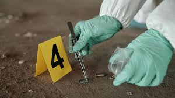

Sobre mi y mis gustos
mi nombre es lionel berra, estoy en cuarto año y me va bastante bien, me gustan los gato y la musica, pero lo q mas me llama la antencion es esto:
Desde que tengo memoria, siempre me han llamado la atención los misterios. Me encanta pensar en cómo se resuelven los crímenes, cómo se analiza una escena del crimen o cómo un detective une todas las piezas para descubrir la verdad. Por eso, me interesa tanto la criminología y la carrera de detective. No se trata solo de atrapar a los culpables, sino de entender por qué suceden las cosas, cómo piensa la gente y cómo se puede hacer justicia. Además, hay un lugar donde puedo explorar todo eso de una forma divertida: Roblox. En esta plataforma paso tiempo jugando y también creando. Me gusta meterme en juegos de rol donde soy detective, interrogo sospechosos, investigo pistas y armo mis propias teorías. A veces incluso imagino mis propios juegos o historias, mezclando lo que sé de criminología con la creatividad. Siento que todo esto va muy de la mano: mi curiosidad, mi gusto por resolver problemas y mi interés en entender a las personas. Ser detective o estudiar criminología no es solo una carrera que me gusta, sino algo que realmente me apasiona. Y mientras tanto, sigo aprendiendo, jugando y soñando con todo lo que puedo llegar a hacer.
Criminologia
La criminología no es solo estudiar delitos, es tratar de entender por qué ocurren. Es mirar más allá del acto y preguntarse qué llevó a una persona a cruzar esa línea. No se trata de justificar, sino de comprender. Quienes estudian criminología escuchan historias difíciles. Hablan con personas que cometieron errores graves, pero también con víctimas, familias rotas y comunidades marcadas por la violencia. Analizan patrones, pero también emociones, entornos y decisiones humanas. Ser criminólogo es tener la sensibilidad para no quedarse en la superficie y la mente abierta para buscar soluciones reales. Porque muchas veces, prevenir un crimen empieza con escuchar a tiempo.
Detective
Ser detective es vivir entre preguntas sin respuesta, sospechas y verdades ocultas. No siempre es como en las películas: muchas veces implica esperar en silencio, seguir pistas pequeñas o hablar con personas que guardan secretos. Hay detectives que trabajan con la policía, resolviendo crímenes graves. Otros son privados y ayudan a personas comunes a descubrir lo que no pueden ver por sí mismas: una infidelidad, una estafa, alguien que desapareció hace años. Lo esencial en este trabajo no es la acción, sino la observación, la paciencia y la empatía. Porque detrás de cada caso hay una historia humana. Y el detective está ahí para entenderla y encontrar la verdad.
EN CONCLUSION
Al final, todo esto es más que solo una curiosidad o un juego. Es mi forma de conectar con el mundo y con las personas, de entender sus motivaciones y lo que está detrás de sus acciones. La criminología y el ser detective no son solo carreras que me llaman la atención, sino algo que me apasiona profundamente, porque en el fondo quiero ayudar a descubrir la verdad. Y mientras sigo aprendiendo, jugando y creando, sé que cada paso me acerca un poco más a poder vivir ese sueño, explorando el misterio de una manera única y personal.